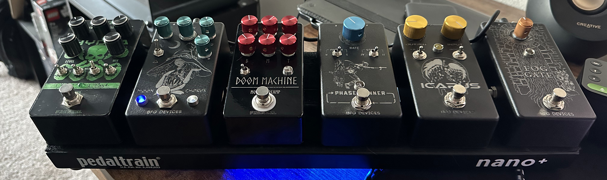
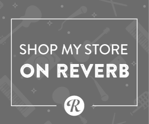

LATEST BUILDS

Pedal
Icarus
Modded LM368 Distortion

Pedal
Fog Gate
Keyed Input Noise Gate

Pedal
Moon Chorus
Elden Ring Inspired Chorus

Pedal
Phase Runner
Multi-stage Phaser
ABOUT
Custom and Boutique effects pedals, hand-crafted in California
B.F.G. Devices is a brand abbreviation of “Brandon Frenzel Guitar Devices”. I started building my own pedals from kits to satisfy instagram-induced gear aquisition syndrome, but combine them with artwork I have created to fit a particular aesthetic. I kept pushing to learn the basic electrical engineering of circuits and microcontrollers to make my ideas into reality.
As a veteran of the musical instrument industry, I've had a hand in designing for dozens of products over multiple brands over the last decade. I want to share my artistry and ingenuity other creative musicians to build them something unique.
Join my maker journey by visiting my blog for inisghts and retrospectives as I describe the thought process for the various builds. Contact me for inquiries about custom pedals or devices.
Brandon Frenzel
Founder

Brandon Frenzel
Art Direction
Brandon Frenzel
Engineering
SHOP
I don't have a fancy e-commerce setup yet, but you can find pre-built pedals on my store while supplies last.

LETS BE FRIENDS
Want to commission a pedal?
Thousand Oaks, California, USA
Email: brandon@bfgdevices.com